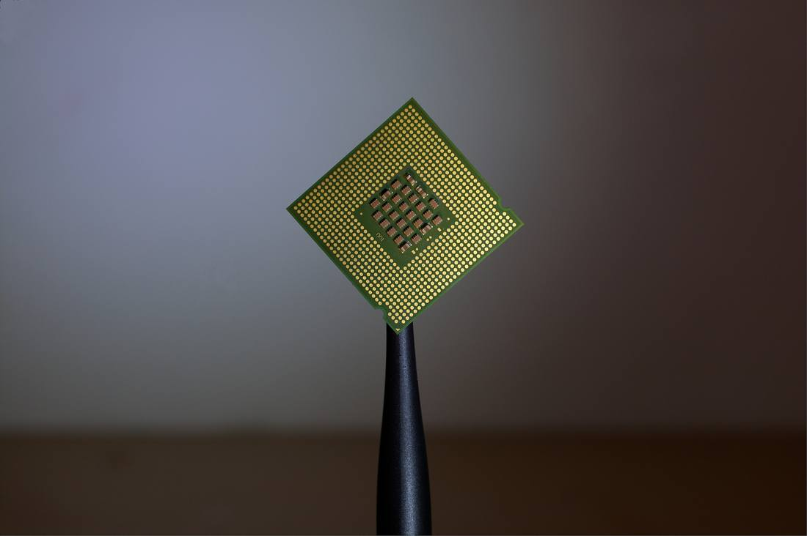

Remote-Access Chip Rule Takes Effect as Federal Register Publishes It
The U.S. Commerce Department's interim final rule closing the remote-access route to advanced AI chips was published in the Federal Register on November 19, 2026 (FR Doc. 2026-23529) and took effect the same day. Data centers anywhere in the world that supply more than 12 million aggregate TPP of computing power to companies headquartered in China, Macau or other Country Group D:5 destinations now need a licence, and exports of advanced chips to five diversion-risk countries need one too. Existing data-center arrangements have 90 days to obtain licences, and comments on the rule are due by January 19, 2027. This flash updates ISSUE 389, which covered the rule's issuance on November 16, 2026.

- 01THE ISSUANCE — On November 16, 2026, the Commerce Department's Bureau of Industry and Security issued the interim final rule "Addressing Remote Access to Advanced Semiconductors" (RIN 0694-AK50), closing the route that let restricted firms rent AI compute from data centers abroad.
- 02THE PUBLICATION — On November 19, 2026, the rule was published in the Federal Register as document 2026-23529 (printed page 74970) and took effect the same day, as its DATES clause states. The public-inspection file had listed publication for November 19.
- 03THE LICENCE TESTS — The rule adds a data-center end-use licence test above 12 million aggregate TPP for Country Group D:5 and Macau-headquartered firms, a licence requirement for advanced chip exports to Indonesia, Malaysia, Singapore, Thailand and Brazil, and tighter presumptions for foundries and packagers producing advanced-node logic chips.
WHAT HAPPENEDWhat Happened
The Bureau of Industry and Security's interim final rule, "Addressing Remote Access to Advanced Semiconductors," appeared in the Federal Register on November 19, 2026, as document 2026-23529, printed page 74970, and its DATES clause makes it effective the same day. The rule was issued on November 16, 2026; publication turns it from an announced policy into enforceable law, and the Commerce Department has confirmed the comment period runs until January 19, 2027 under docket BIS-2026-0628.
The core change is that remote access now counts as an export. Previously, Chinese companies barred from buying advanced U.S. chips could rent the same computing power from data centers abroad, because remote access did not count as an export. The rule adds a data-center end-use licence test: a licence is required to export, re-export or transfer advanced computing items to a data center, anywhere in the world, that gives more than 12 million aggregate total processing performance (TPP) to companies headquartered in China, Macau or another Country Group D:5 destination. That threshold is roughly 750 Nvidia H100 accelerators.
The rule also requires a licence for advanced semiconductor exports to Indonesia, Malaysia, Singapore, Thailand and Brazil, with an exception for chips destined to companies headquartered in the United States, subject to reporting requirements. Data centers, foreign foundries and chip exporters must perform due diligence on their customers, including any direct or indirect ownership or control by persons in Country Group D:5 or Macau, and a customer that refuses to provide ownership information is a red flag. Commercial recommender systems, such as those used by online retailers or social media companies, are exempt.
The rule formally rescinds the Biden-era AI Diffusion Rule, the January 2025 framework of country-by-country caps that was never enforced and whose rescission the Commerce Department announced in May 2025. It also narrows the pathways front-end fabricators and chip packagers have to overcome presumptions against exporting advanced-node logic chips for designers in destinations facing licence requirements.
WHY IT MATTERSA 90-day clock now runs on existing contracts
Publication matters because the interim final rule's deadlines start from it. Data centers already serving covered customers have 90 days, until mid-February 2027, to obtain licences if they want to keep providing that access, and orders already placed that did not previously need a licence can still be completed within 30 days of publication. Every cloud operator, neocloud and colocation provider with a Chinese-owned customer, or a customer whose ownership is unclear, now has a dated compliance task rather than a policy debate.
The scope is deliberately broad. The licence test follows the computing power, not the shipment: a data center in any country is covered if it supplies above-threshold compute to a restricted firm, and indirect access through brokers is covered too. That is why the rule reaches far beyond U.S. soil and why European and Asian operators are the first ones re-checking customer lists.
WHAT TO WATCHWhat is still open: comments, Congress and enforcement
The rule is interim final, so it is in force while the comment period runs until January 19, 2027, and the Bureau of Industry and Security can still adjust it in the final version. The material published so far does not establish how quickly licence applications will be processed or how enforcement will work in practice.
Congress is separately debating whether to write stricter chip controls into the fiscal 2027 defence bill. The Senate version includes three bills, the Chip Security Act, the AI Overwatch Act and the MATCH Act, but no conference text has been published yet, so none of that is law. Commerce Secretary Lutnick is due to testify before the Senate Banking Committee on December 10.
SIGNAL JUDGMENT — ANALYSISEnforceable law now, with the hard questions still ahead
Tokenta Signal's judgment: publication is the moment this rule stops being an announcement and starts being a compliance deadline. The 90-day licensing window and the 30-day in-transit window give operators a fixed calendar, and the due-diligence duty reaches every data center that sells compute to a customer whose ownership is unclear. The open questions are practical, not political: how fast licences are granted, how strictly indirect access is policed, and whether Congress writes the controls into statute in the defence bill. Until those are answered, the rule's bite is real but its enforcement pace is unproven.
WHAT REMAINS UNCERTAINWhat Remains Uncertain
EVIDENCEEvidence
The Bureau of Industry and Security's interim final rule on remote access to advanced semiconductors was published in the Federal Register on November 19, 2026 (FR Doc. 2026-23529, printed page 74970) and took effect the same day, closing the route that let restricted firms rent AI compute from data centers abroad. Existing data-center arrangements have 90 days to obtain licences, and comments are due by January 19, 2027.
PRIMARY SOURCESPrimary Sources
- Federal Register: Addressing Remote Access to Advanced Semiconductors
https://www.federalregister.gov/documents/2026/11/19/2026-23529/addressing-remote-access-to-advanced-semiconductors - Overduin PLLC: How Washington Is Rewriting AI Chip Export Rules
https://www.overduinpllc.com/post/after-the-affair-how-washington-is-rewriting-ai-chip-rules
RELATEDRelated Intelligence
- OpenAI Countersues Apple Over Trade Secrets and Supplier Pressure
- U.S. Trustee Asks Court to Kill Disney's $20M Character.ai License Deal
- US Jury Convicts Huawei of Trade-Secret Theft, Fraud and Sanctions Violations
- China Telecom Open-Sources Xing4.1-Preview, a 285B Model Trained Without Nvidia Hardware